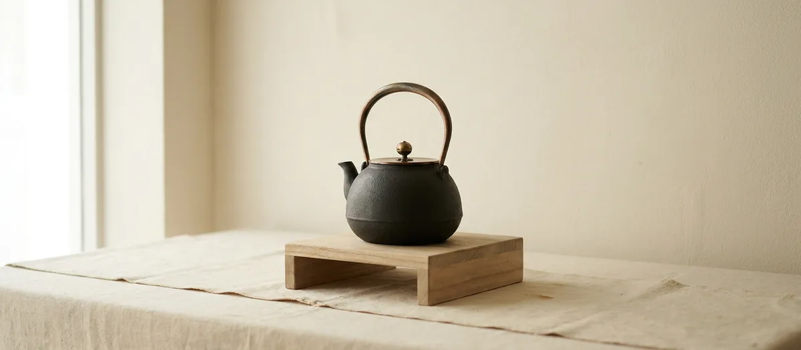

ガイド ／ 伝統的工芸品
伝統的工芸品「南部鉄器」と伝統証紙とは

南部鉄器は国が指定する伝統的工芸品です。ただ、店頭で見かける伝統証紙が何を保証しているのかは、意外と知られていません。ここでは法律と公的機関の説明にもとづいて、指定制度と証紙の意味を正確に整理します。
01国が指定する「伝統的工芸品」とは
南部鉄器は、経済産業大臣が指定する伝統的工芸品です。伝統的工芸品産業振興協会の公式データベースによれば、南部鉄器の指定年月日は昭和50年（1975年）2月17日、主要製造地域は岩手県盛岡市・奥州市とされています。
この日付には意味があります。同協会が公開している指定品目の一覧で、南部鉄器は指定順の1番に置かれています。及源鋳造（OIGEN）も「全国で初めて指定されました」と記しています。日本の伝統的工芸品制度は、南部鉄器から始まったということです。
「伝統工芸品」ではなく「伝統的工芸品」
細かいようですが、法律にもとづく正式な呼び方は「伝統的工芸品」です。「伝統工芸品」は一般的な言い方で、国の指定を受けたものを指すときは「的」が入ります。商品説明で使い分けられていることがあるので、頭の片隅に置いておくと表示を読み解きやすくなります。
根拠となるのは伝統的工芸品産業の振興に関する法律（昭和49年法律第57号）です。指定は経済産業大臣が産業構造審議会の意見を聴いて行い、産地の組合等が指定を申し出ることもできます。指定は「伝統的な技術又は技法」「伝統的に使用されてきた原材料」「製造される地域」の3点を定めて行われ、指定した旨が公示されます。
02指定を受けるための5つの要件
法律の第2条第1項は、伝統的工芸品の要件を次の5つと定めています（条文の要旨）。
- 主として日常生活の用に供されるものであること
- その製造過程の主要部分が手工業的であること
- 伝統的な技術又は技法により製造されるものであること
- 伝統的に使用されてきた原材料が主たる原材料として用いられ、製造されるものであること
- 一定の地域において少なくない数の者がその製造を行い、又はその製造に従事しているものであること
よく「100年以上の歴史が必要」と紹介されますが、条文そのものに年数の要件は書かれていません。本サイトでは、確認できる条文の範囲でご案内しています。
03伝統証紙（伝統マーク）は何を保証しているか
店頭で見かける金色の証紙が伝統証紙です。発行・管理しているのは一般財団法人伝統的工芸品産業振興協会で、同協会は次のように説明しています。
伝統マークは、経済産業大臣指定伝統的工芸品のシンボルマークです。経済産業大臣が指定した技術・技法・原材料で制作され、産地検査に合格した製品には、伝統マークのデザインを使った「伝統証紙」が貼られています。
証紙の実物 ── サイズも記載内容も決まっている
証紙は同協会が発行しており、その仕様は公開されています。デザインは亀倉雄策氏によるもので、伝統の「伝」の字と日本の心を表す赤丸を組み合わせたものです（中部経済産業局）。同協会の資料によれば地色は金色と定められ、「経済産業大臣指定伝統的工芸品」の文言およびマークは変更をしないことが条件とされています。
大きさも決まっています。大証紙が縦65mm×横38mm、中証紙が縦45mm×横27mm、ほかに小証紙が3種類あります。
番号については、正確に書いておきます。中部経済産業局は「大証紙と中証紙には、すべて連番になる管理番号を入れ、仮に事故が発生した場合には、生産者まで遡ってその責任を追求することができる」と説明しています。ただし同協会の仕様には小証紙に「番号無」の型も存在するため、「すべての証紙に番号がある」とは言えません。
記載内容も2系統あります。工芸品名と組合名が入る「工芸品別証紙」と、それらの欄がない「共通証紙」です。「証紙には必ず工芸品名と組合名が書かれている」という説明を見かけますが、これは工芸品別証紙を前提にした話です。
検査をしているのは誰か
もう一歩踏み込むと、協会と産地の役割は分かれています。同協会の事業内容によれば、協会は伝統証紙を貼付する製品の検査体制の「確認及び指導」を行い、消費者に誤認混同を与えない表示ができるよう表示事業の実施態勢を産地組合とともに整える立場です。つまり実際の検査は産地側の体制で行われ、協会はそれを確認・指導するという二層構造になっています。
誤解しやすいポイント
証紙が意味するのは「指定された技術・技法・原材料でつくられ、産地検査に合格した製品である」ということです。証紙がない＝偽物、ではありません。指定の要件に当てはまらない現代的なデザインの鉄瓶や、量産の製法でつくられた国産品にも、正規の南部鉄器はあります。証紙は「本物かどうか」ではなく「指定要件に合致した製品かどうか」の目印と理解するのが正確です。
実際、及源鋳造（OIGEN）は伝統マークが付くのは焼型の鉄瓶としており、量産向けの生型鉄瓶には付きません。生型の鉄瓶も岩手の工房が作る正規の南部鉄器ですが、証紙は付かない。証紙の有無は「本物か偽物か」ではなく「どの製法か」を映しているのです。
海外製の模倣品を避けたい場合は、証紙の有無だけで判断せず、工房名・産地・販売元をあわせて確認してください。及富は、極端に低価格な商品は海外製が疑われること、販売元の国名表示（JPかCNか）を確認することを挙げています。
04南部鉄器の「技術・技法」として指定されている内容
南部鉄器の指定内容には、つくり方が具体的に書かれています。要旨は次のとおりです。
- 鋳型は砂型であること
- 溶けた鉄と接する部分の鋳物砂には真土（まね）を用いること
- 鋳型の造型は「挽き型」または「込め型」によること
- 「挽き型」による場合は、鋳型の表面に「紋様押し」または「肌打ち」をすること
- 鋳型の焼成または乾燥をすること
- 表面は漆および鉄しょうを用いて着色すること
- 料理用具として用いられるものは「金気止め」をすること
模様が「鉄瓶の表面」ではなく「鋳型の表面」に押されると書かれている点に注目してください。南部鉄瓶の模様は、鋳型に押した凹凸が鉄に写し取られてできています。
南部鉄瓶ができるまで（製造工程）を読む › / 模様の意味と由来を読む ›
05伝統工芸士とは
工房の紹介で見かける伝統工芸士は、伝統的工芸品産業振興協会が認定する資格です。同協会によれば、受験には製造地域における製造実務経験が満12年以上必要で、実技試験・知識試験・面接試験に合格しなければなりません。認定後も5年ごとに技量などの確認が行われます。
同協会は伝統工芸士を「伝統的工芸品の製造に従事する作り手のうち、1割ほどの限られた存在」「まさに職人の中の職人です」と位置づけ、後継者の育成、産地振興の中心となる産地のリーダーとしての役割が期待されるとしています。認定は一度きりではなく、5年ごとに更新試験があります。
なお、これは国家資格ではなく「称号」です。協会も経済産業省も「称号」と表記しています。
南部鉄器には何人いるのか
ここは数字が2つあり、出典によって食い違います。正直にどちらも書きます。
- 18名──経済産業省 東北経済産業局「東北の伝統的工芸品」の産地組合概要欄（調査年次の記載なし）
- 25名──同協会の「日本の伝統工芸士ナビ」で南部鉄器を検索した結果（2026年8月29日時点）
ナビの一覧を見ると、認定年は1994年から2026年まで幅広く、部門も「総合」のほかに「鍛造」「造形（専門技術＝鉉製作）」があります。鉉（つる）をつくる専門の伝統工芸士がいる——南部鉄器協同組合が「つる次第で鉄びんのでき不出来が決まる」とまで書く部分に、専門の職人がいるということです。
ちなみに全国の伝統工芸士は約3,200名（同協会・2026年2月25日基準）。2020年に約4,000名だったものが減り続けています。
本サイトの工房ページでも、公式サイトで確認できた範囲で伝統工芸士を紹介しています。
06南部鉄器の産地組合
証紙の検査体制を担うのが産地の組合です。南部鉄器には次の3団体があります。
| 団体 | 所在 | 位置づけ |
|---|---|---|
| 岩手県南部鉄器協同組合連合会 | 盛岡市繋（盛岡手づくり村内） | 県全体の連合組織。1959年設立 |
| 南部鉄器協同組合 | 盛岡市繋 | 盛岡側。昭和24年（1949年）設立 |
| 水沢鋳物工業協同組合 | 奥州市水沢羽田町 | 水沢側 |
連合会が1959年に設立されたとき、盛岡と水沢の鉄器の名称が「南部鉄器」に統一されました。それ以前は別々の産地として、別々の名前で呼ばれていました。「南部鉄器」という呼び名自体が、まだ70年ほどの歴史しかないということです。
「南部鉄器」は商標でもある
あまり知られていませんが、「南部鉄器」は地域団体商標として登録されています。特許庁の情報によれば商標登録第5102662号、権利者は岩手県南部鉄器協同組合連合会です。指定商品は「岩手県盛岡市及び奥州市で生産された鉄製のなべ類・（中略）鉄瓶・（中略）風鈴・香炉」とされています。
つまり「南部鉄器」という名前は、盛岡市と奥州市で生産されたものに対して使われるという枠組みが、商標のうえでも定められているわけです。産地を確認することの意味は、ここにもあります。
南部鉄器の歴史（盛岡と水沢）を読む › / 盛岡の系統を見る › / 水沢の系統を見る ›
07産地はいまどれくらいの規模か
南部鉄器の産地がどれくらいの大きさなのか、経済産業省 東北経済産業局が産地組合の概要として数字を公開しています。
| 項目 | 数値 |
|---|---|
| 企業数 | 74事業所 |
| 従事者数 | 730名（推計） |
| 年間生産額 | 約80億円（推計） |
| 伝統工芸士 | 18名 |
| 主な製品 | 茶の湯釜、鉄びん、その他鉄器製品全般 |
※東北経済産業局「東北の伝統的工芸品」掲載値。同ページに調査年次の記載がないため、いつ時点の数字かは確認できていません（2026年8月29日確認）。ウェブ上には「約92億円」という数字も流通していますが、公的な出典を確認できなかったため本サイトでは採用していません。
74事業所、730人。思ったより小さいと感じる方が多いのではないでしょうか。全国の伝統的工芸品産業全体を見ても、経済産業省の資料（令和4年度）によれば1社あたりの平均従業者数は5.2人、従事者の63.6%が50代以上、20代までは6.0%です。
本サイトが16の工房と210銘柄を掲載できているのも、産地の規模を考えれば決して当たり前ではありません。正規の工房から買うことが、そのまま産地を残すことにつながる——数字を見ると、それが実感として分かります。
掲載している工房の一覧を見る › / 正規に買える工房・ショップ一覧 ›
08指定は取り消されることがあるのか
最後に、制度の細かい話をひとつ。伝統的工芸品の指定に有効期限はありません。法律の条文を検索しても「有効期間」「更新」といった規定は出てきません。一度指定されれば、更新手続きなしで続きます。
ただし「解除」の規定はあります。伝統的工芸品産業の振興に関する法律 第2条第6項です。
経済産業大臣は、伝統的工芸品が第一項各号に掲げる要件のいずれかに該当しなくなつた場合には、産業構造審議会の意見を聴いて、その指定を解除することができる。
5つの要件——日常生活で使われること、製造過程の主要部分が手工業的であること、伝統的な技術・技法によること、伝統的な原材料を用いること、一定の地域に少なくない数の従事者がいること——を満たさなくなれば、指定は解除されうる。
裏を返せば、指定が続いていること自体が、産地がいまも動いていることの証明だということです。1975年の指定から半世紀、南部鉄器はその状態を保っています。
09よくある質問
南部鉄器はいつ伝統的工芸品に指定されましたか？
伝統証紙が貼られていない南部鉄器は偽物ですか？
伝統的工芸品に指定されるには100年以上の歴史が必要ですか？
伝統工芸士になるにはどうすればよいですか？
伝統証紙は誰が発行していますか？
伝統証紙には番号が入っていますか？
南部鉄器の産地はどれくらいの規模ですか？
南部鉄器の伝統工芸士は何人いますか？
伝統的工芸品の指定に有効期限はありますか？
この記事に関連する銘柄
本サイト掲載の銘柄です。伝統証紙の有無は商品ごとに異なるため、購入前にご確認ください。価格・容量・熱源は各工房の公式サイトまたは正規取扱店で確認した掲載時点の情報です。おすすめ順ではありません。
PR ／ アフィリエイトリンクを含みます。
模様から探す › / 容量から探す › / 熱源から探す › / 予算から探す ›
出典（外部リンク）
本記事が引用した一次ソースのうち、該当ページを特定できたものです。リンク先は別タブで開きます（2026年8月31日に到達を確認）。
出典：一般財団法人伝統的工芸品産業振興協会（kougeihin.jp／kyokai.kougeihin.jp／日本の伝統工芸士ナビ）、e-Gov法令検索「伝統的工芸品産業の振興に関する法律」（昭和49年法律第57号）、経済産業省 東北経済産業局「東北の伝統的工芸品」、中部経済産業局、特許庁（地域団体商標）、南部鉄器協同組合、水沢鋳物工業協同組合の各公式情報。2026年8月10日・8月29日確認。産地の統計は調査年次の記載がない掲載値です。指定内容・要件は要旨としてまとめています。正確な条文・告示内容は各公式情報をご確認ください。